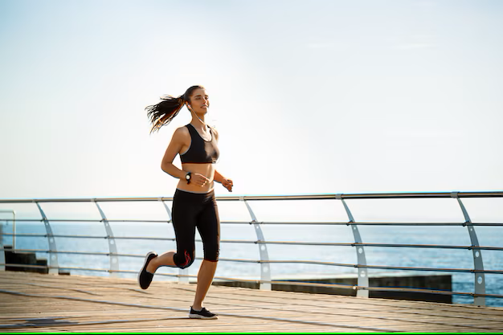

Cardio Workout

Running mostly works muscles in the lower body like the glutes, hamstrings, and quads.

High knees activate your quadriceps, hamstrings, calves, glutes, and hip flexors, helping improve muscular endurance, balance, and coordination in these muscles.

Jump squat targets the glutes, quads, hips, and hamstrings while also increasing your heart rate.

Mountain climber exercises engage your core, arms, shoulders, back, chest, legs, and glutes, adds Tunde

Jump Rope The calf muscles are the primary muscle targeted by rope jumping which many other workouts sideline. Your calves' gastrocnemius and soleus muscles are strengthened for better stamina and balance.